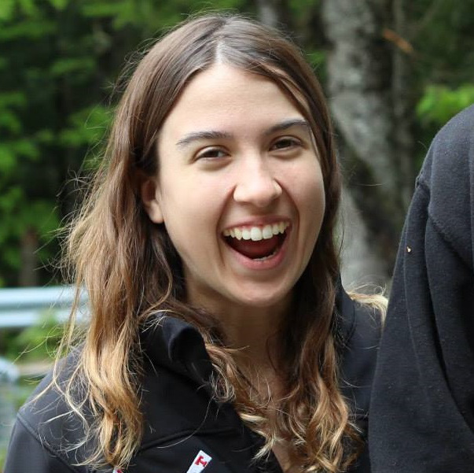
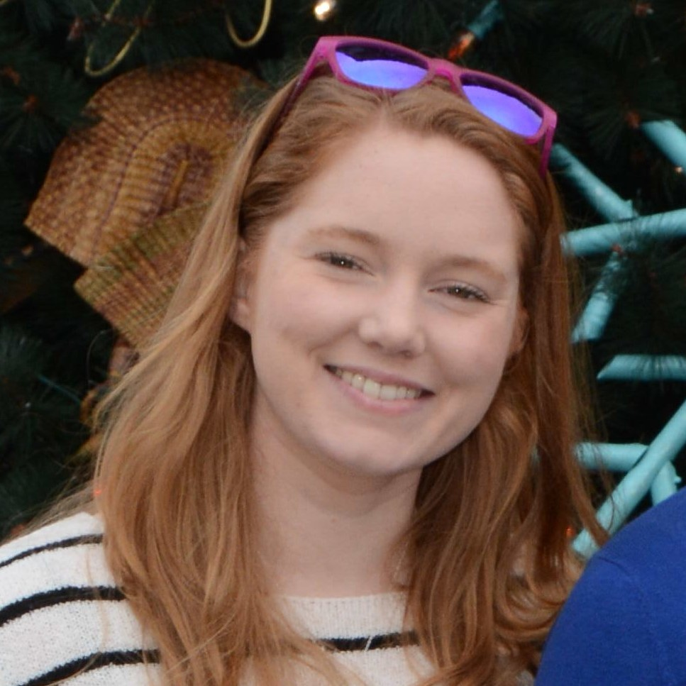
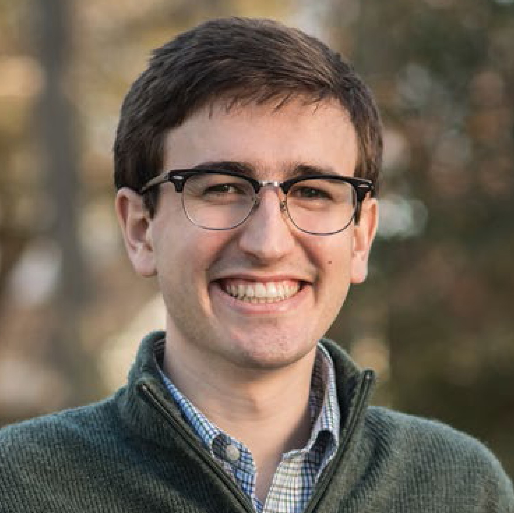

Toggle navigation
Kwiat Quantum Information Group
Kwiat Group
Home
People
Research
Fundamental Studies
Tests of Nonlocality
Multipartite Entanglement
Optical Quantum Information Resources
Sources of Entanglement
Single-Photon Sources
Single-Photon Detectors
Quantum Random Number Generation
Waveguides and Adaptive Optics
Optical Quantum Information Applications
State Characterization
Hyperentanglement-Enhanced Quantum Communication
Other Applications
Quantum Mechanics and Human Perception
Precision Optical Measurements
Past Research
Quantum Non-Demolition Detectors
Frequency Upconversion and State Transduction
Counterfactual Quantum Computation
Relativistic Quantum Cryptography
Tomography
Publications
Fun stuff
LabEscape
Our research group
Paul Kwiat
Our fearless leader
kwiat@illinois.edu
Bowtie Scientist
Postdoc
bowtie@illinois.edu
Graduate Students
Courtney Krafczyk
byard2@illinois.edu
Alex Hill
adhill4@illinois.edu
Christopher Zeitler
czeitle2@illinois.edu

Michelle Victora
victora2@illinois.edu

Kristina Meier
kadunga2@illinois.edu
Joseph Chapman
jchapmn2@illinois.edu
Dalton Chaffee
daltonc2@illinois.edu

Colin Lualdi
clualdi2@illinois.edu
Spencer Johnson
sjj3@illinois.edu
Julia Spina
jspina2@illinois.edu
Undergraduate Students
Annika Dugad
Brian Wilens
Henry Ando
Ian Call
Imran Sultan
Kyle Herndon
Sohm Apte
Older group photos:
[1]
[2]
[3]
[4]
Previous group members
Postdocs
Fumihiro Kaneda
Soyoung Baek
Jian Yang
Jan Bogdanski
David Branning
Now:
Associate professor at Trinity College in Hartford, CT
Marie Ericsson
Now:
Assistant professor at Uppsala University in Uppsala, Sweden
Graduate Students
Michael Wayne (2017)
Ph.D. thesis:
"Optical Quantum Random Number Generation: Applications of Single-Photon Event Timing"
Rebecca Holmes (2017)
Ph.D. thesis:
"Testing the Limits of Human Vision with Quantum States of Light"
Now:
Postdoc at Los Alamos National Laboratory
Aditya Sharma (2016)
Ph.D. thesis:
"In Search of Photonic Bound Entanglement: Using Hyperentanglement to Study Mixed Entangled States"
Now:
Postdoc with Dr. Philip Walther at Universität Wien in Vienna, Austria
Bradley Christensen (2016)
Ph.D. thesis:
"Advanced Tests of Nonlocality with Entangled Photons"
Now:
Postdoc with Dr. Robert McDermott at The University of Wisconsin-Madison
Trent Graham (2016)
Ph.D. thesis:
"Using Hyperentanglement for Advanced Quantum Communication"
Now:
Postdoc with Dr. Mark Saffman at The University of Wisconsin-Madison
J.J. Wong (2016)
Kevin Zielnicki (2014)
Ph.D. thesis:
"Pure Sources and Efficient Detectors for Optical Quantum Information Processing"
Now:
Stitch Fix in San Francisco, CA
Past:
Silicon Valley Data Science in Mountain View, CA
Kevin McCusker (2012)
Ph.D. thesis:
"Efficient Quantum Optical State Engineering and Applications"
Now:
Barnes & Thornburg (patent law)
Past:
Postdoc with Dr. Prem Kumar at Northwestern University
Radhika Dirks (Rangarajan) (2010)
Ph.D. thesis:
"Photonic Sources and Detectors for Quantum Information Processing: A Trilogy in Eight Parts"
Now:
Startup in Palo Alto, CA
Past:
Shell Corporation in Houston, TX
Onur Hosten (2010)
Ph.D. thesis:
"Applications of Quantum Measurement Techniques: Counterfactual Quantum Computation, Spin Hall Effect of Light, and Atomic-Vapor-Based Photon Detectors"
Now:
Postdoc with Dr. Mark Kasevich at Stanford University
Scott Jobling (2009)
Master's thesis:
"Adaptive Optics for Improved Mode Coupling Efficiencies"
Now:
Thorlabs Quantum Electronics in Jessup, MD
Past:
Infinera in Allentown, PA
Julio Barreiro (2008)
Ph.D. thesis:
"Hyperentanglement for Quantum Communication"
Now:
Assistant Professor of Physics, UC-San Diego
Past:
Postdoc with Dr. Immanuel Bloch at Max Planck Institute of Quantum Optics in Garching, Germany; Postdoc with Dr. Ranier Blatt at Universitat Innsbruck in Innsbruck, Austria
Michael Wayne (2008)
Master's thesis:
"Photon Arrival Time Quantum Random Number Generation"
Now:
(See Ph.D. thesis in this list above)
Evan Jeffrey (2007)
Ph.D. thesis:
"Advanced Quantum Communication Systems"
Now:
Postdoc with Dr. John Martinis at UC-Santa Barbara/Google
Aaron VanDevender (2007)
Ph.D. thesis:
"Quantum Information Applications of Frequency Upconversion"
Now:
Founders Fund in San Francisco, CA
Past:
Postdoc with Dr. David Wineland at NIST in Boulder, CO; Halcyon Molecular in Redwood City, CA
Joe Altepeter (2006)
Ph.D. thesis:
"Testing the Limits of Nonlocality"
Now:
Berberian & Company in College Park, MD
Past:
Research professor at Northwestern University; Postdoc with Dr. Andrew White at the University of Queensland in Brisbane, Australia
Nicholas Peters (2006)
Ph.D. thesis:
"One- And Two-Photon States for Quantum Information"
Now:
Applied Communication Sciences
Outstanding Undergrads
Bruce Crabtree
Chris Chopp
Amy Zou
Malhar Jere
Sheldon Schlie
Laurynas Tamulevičius
Adam Schunk
Austin Graf
David Hervas Aguilar
Daniel Kumor
David Schmid
Mae Hwee Teo
Cory Alford
Vesselin Velev
Jake Smith
Dickson Thian
Ting-Yu Huang
Felicia Martinez
Daryl Achilles
Matthew Rakher
Kyle Arnold
Kevin Uskali
Gleb Akselrod
Rachel Hillmer
![[1]](/QI/Photonics/img/group-photo-2011.jpg){kind=link}
{kind=link}
![[4]](/QI/Photonics/img/group-photo-alma-mater.jpg){kind=link}